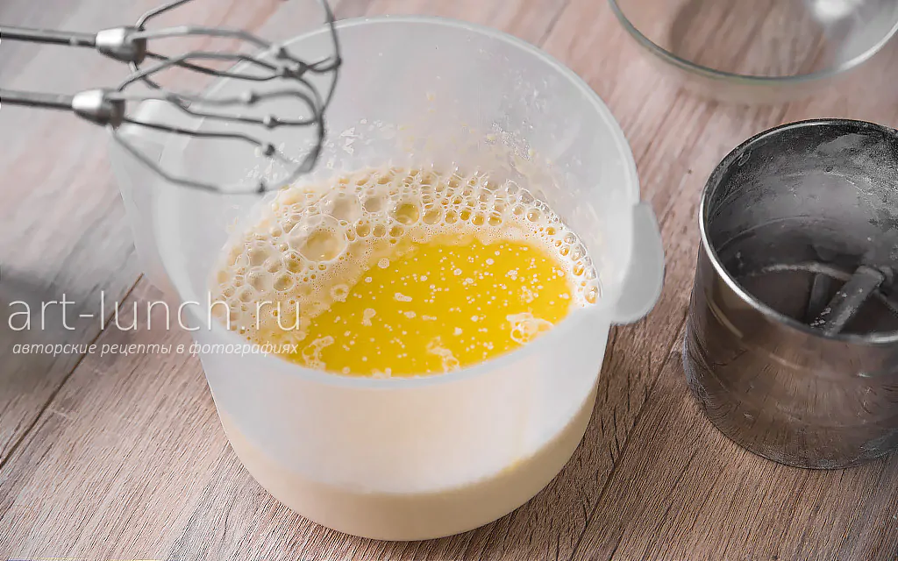

Ингредиенты:
Из указанного количества ингредиентов
получается примерно 15 блинчиков диаметром 22см.
- Молоко 500мл
- Яйца 3шт
- Мука 200г
- Растительное масло 2ст.л
- Сахар 30г
- Соль 2-3г
Приготовление:
Шаг 1
Подготовим все ингредиенты. Хорошо, если все они будут комнатной температуры, тогда они лучше соединятся.
Поэтому лучше достаньте яйца (3 шт.) и молоко (500 мл) из холодильника заранее.
Масло (30 г или 2 ст. ложки) можно использовать как растительное рафинированное (без запаха), так и сливочное.
Шаг 2
Яйца хорошо моем, выбиваем в ёмкость для взбивания, добавляем сахар (30 г или 2 ст. ложки) и соль (1/2 ч. ложки).
Перемешиваем до однородности миксером, венчиком или просто вилкой. Здесь у нас нет необходимости взбить яйца в пену,
нужно лишь перемешать до однородного состояния и полного растворения соли и сахара.
Шаг 3
Добавляем к яичной массе небольшую часть молока, где-то 100-150 мл. Мы не наливаем всё молоко сразу, потому что,
при добавлении муки, более густое тесто проще перемешать до однородного состояния. Если выльем всё молоко сразу,
скорее всего, в тесте останутся непромешанные комочки муки, и придётся в дальнейшем процеживать тесто, чтобы от них избавится.
Так что пока добавляем только небольшую часть молока и перемешиваем массу до однородности.
Шаг 4
Просеиваем муку (200 г) в ёмкость с тестом.
Это необходимо для того, чтобы очистить её от возможных примесей и комочков, поэтому
рекомендую не пропускать этот пункт.
Шаг 5
Перемешиваем тесто. Сейчас оно довольно густое,
и должно перемешаться до гладкого однородного состояния, без комочков.
Шаг 6
Теперь добавляем оставшееся молоко и снова перемешиваем.
Шаг 7
Наливаем остывшее растопленное сливочное или растительное масло в тесто.
Перемешиваем до однородности, тесто получится довольно жидкое, примерно как жирные сливки.

Ну а теперь, когда тесто готово, пора жарить блины. Смазывать сковороду лучше растительным маслом, т.к. сливочное очень быстро начинает гореть.
Используйте для смазывания сковороды силиконовую кисточку или просто салфетку, пропитанную маслом.
Наливаем тесто на раскалённую сковородку и одновременно вращаем её по кругу так,
что бы тесто покрыло дно ровным тонким слоем.ь с тестом.
Это необходимо для того, чтобы очистить её от возможных примесей и комочков, поэтому
рекомендую не пропускать этот пункт.
Переворачивать блин следует, когда тесто сверху схватится
и перестанет быть липким, а края начнут чуть-чуть темнеть.
Обжарьте блин со второй стороны. Приподнимайте край лопаткой и смотрите,
чтобы он не подгорел снизу.
Когда блинчик снизу станет румяным, снимаем его со сковороды.
Готовые блины выкладывайте на большую плоскую тарелку, и лучше накрывайте их крышкой, чтобы они оставались горячими.
Если вы любите более масляные блины, то смазывайте каждый блинчик
растопленным сливочным маслом, очень удобно это делать силиконовой кисточкой.
Подавайте блины горячими - со сметаной, мёдом, вареньем, сгущёнкой или любимыми ягодами.
А можно и с сыром, грибами или мясной начинкой - как душа пожелает!
Готовьте с удовольствием, экспериментируйте со вкусами и делитесь блинами с близкими.
Приятного аппетита!
Перейти к другим рецептам
Распечатать рецепт